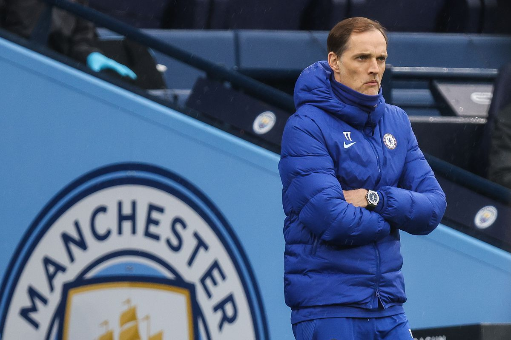
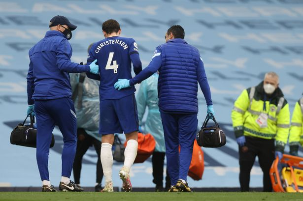

Final Score: Manchester City 1-2 Chelsea
Marcos Alonso’s stoppage-time winner gave Chelsea a dramatic victory over Manchester City and moved the Blues into third place in the Premier League. The Champions League Final preview was full of excitement and interesting moments, adding to the anticipation for the biggest game in European soccer in just a few weeks. Here are five key takeaways:
1. Tuchel Continues Dominance Over Top Opponents
Thomas Tuchel has been brilliant since taking over for Frank Lampard in January. The Blues are firing on all cylinders right now and find themselves in the Champions League Final, the FA Cup Final, and a prime position to finish in the Premier League top-four. The German manager has tightened up the Chelsea defense, gotten the best out of stars like N’Golo Kanté and Mason Mount, and has found ways to utilize the skills of new signings like Timo Werner and Kai Havertz. The most impressive aspect of Tuchel’s short stint with Chelsea has been the team’s record against top opponents, which now includes two victories over Manchester City, victories over Tottenham, Liverpool, and West Ham, and Champions League knockout victories over Atlético Madrid and Real Madrid. Tuchel’s ability to adapt to different situations was on full display on Saturday as he didn’t panic when his team fell behind late in the first half, ultimately guiding his side to an extremely gutsy win. Tuchel has shut down questions from the media about a contract extension, but if he is able to win trophies and continues to make Chelsea a “team no one wants to play against,” he will surely receive more time at Stamford Bridge.

2. Agüero Gets It All Wrong
Sergio Agüero is arguably City’s most iconic player of all time, but the Argentinian has struggled this year in what will be his last season at the club. Injuries and the emergence of younger players have limited his playing time, but Pep Guardiola gave him a chance to start on Saturday in a game in which a win would have sealed the Premier League title. Shortly after Raheem Sterling gave City the lead Billy Gilmour gave away a penalty, and Agüero stepped up to seal the title for his club. It truly seemed like a Hollywood movie...until it didn’t. Agüero went for a Panenka that was easily saved by Édouard Mendy, and City’s lead remained at one. Pep Guardiola was absolutely furious on the sidelines and the studio pundits were shocked when discussing the incident at the break. Agüero was subbed off before Chelsea could find the winner, but it was surely a day to forget for the City legend. Hopefully, he gets another chance to have a proper exit from the club that he helped to put on the map.
3. A Nightmare Day for Christensen
Andreas Christensen has been a revelation since Tuchel took over, oftentimes anchoring or playing on the right side of the back three. Saturday was the first game in recent memory in which Christensen looked outclassed. He made two key errors: one leading to a very good chance early in the first half and another that led to Sterling’s opener on the stroke of half time. The latter incident also caused him to pull up with an apparent hamstring injury, which could very well keep him out for the rest of the season given there are so few matches left. It would be a tough blow to Christensen, who looked like he was on his way to starting the Champions League Final for Chelsea in a few weeks’ time. Chelsea fans will be praying that their Danish center-back will be ready, both physically and emotionally, for the club’s rematch with City at the end of the month.

4. Pep Takes Advantage of the Situation
Manchester City could have wrapped up the title with a victory over Chelsea on Saturday, but they can still take many positives from the result. Most importantly, they will likely secure the title sometime next week. On a deeper level, Pep Guardiola learned more about his team ahead of the Champions League Final. The Citizens experimented with a back three which allowed out-of-favor center-backs Aymeric Laporte and Nathan Aké the chance to show their worth. The new formation also gave Chelsea headaches in the first half as the Blues struggled to maintain possession and break down City’s back-line. Guardiola also gave a start to Raheem Sterling, who has struggled to regain his form from last season. Sterling’s goal as well as flashes of brilliance from the entire team are positive signs for Guardiola as he tries to find his best formation and 11 before the Champions League Final.
5. An Entertaining Final Awaits
If the Champions League Final is anything like Saturday’s match, we are in for a treat. Both sides rested many of their stars but provided an exciting, end-to-end match. The game certainly meant more to Chelsea as the Blues are still trying to secure a top-four finish, but both sides seemed to go for the three points to gain a mental advantage ahead of the final. Chelsea are the team in form and will be replenished with the likes of Mason Mount and Thiago Silva rejoining the side, but there is a reason that Manchester City are consistently seen as one of the top teams in Europe. Kevin De Bruyne, Phil Foden, and İlkay Gündoğan will lead the Citizens out in a game that promises to be a fitting end to a highly entertaining and monumental season for European soccer. Will Pep Guardiola finally lead City to the pinnacle of club soccer? Or will Thomas Tuchel cap off Chelsea’s monumental turnaround and claim his first Champions League title as a manager? There does not seem to be a clear favorite in the match, but one thing is certain: May 29 can’t come soon enough.